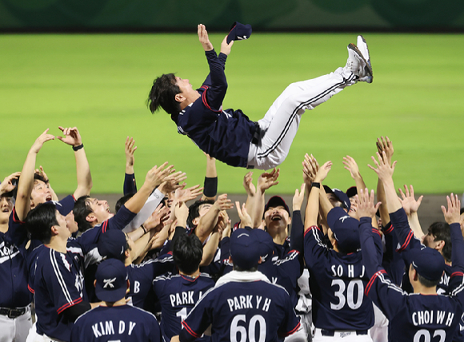

My overall opinion
Overall, I have a negative opinion of this article. Although most of its basic facts are correct, its tone is overly critical and its framing is unbalanced.
South Korea had won its fifth consecutive Asian Games gold medal less than a day before the article was published. However, the article focused mainly on how Korean professionals struggled against Japanese amateurs. I think this timing and emphasis were inappropriate because they reduced the significance of the players’ achievement.
Moreover, Japan’s players were not ordinary recreational amateurs. Many of them belonged to competitive corporate baseball teams and trained within Japan’s highly developed baseball system. Therefore, Korea’s 3–1 victory should not be treated as unimpressive simply because the Japanese players were officially classified as amateurs.
Read the original article →